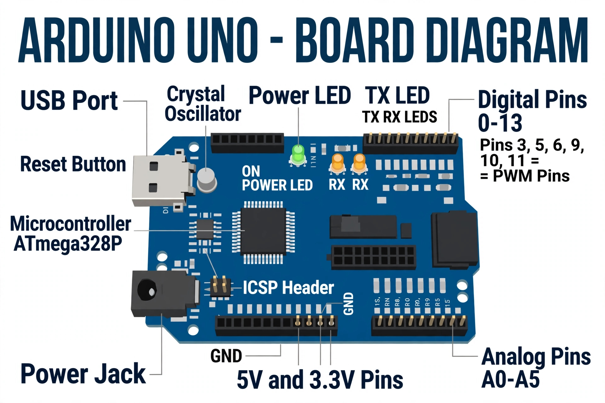
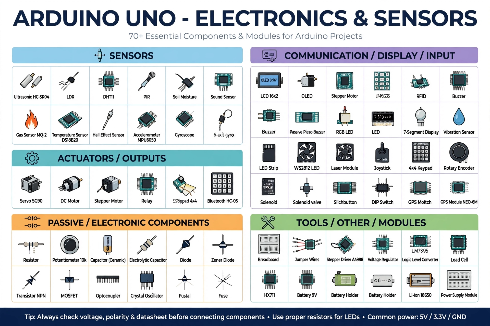
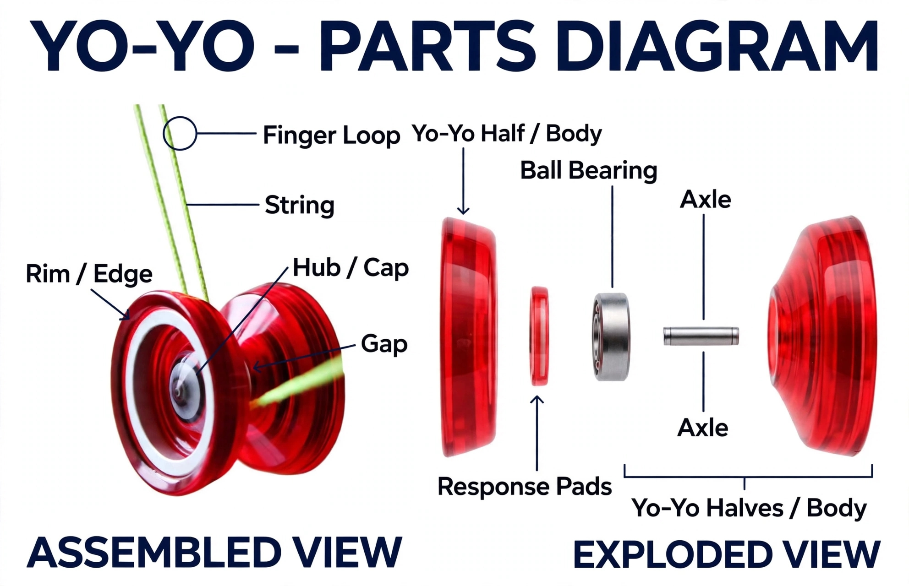
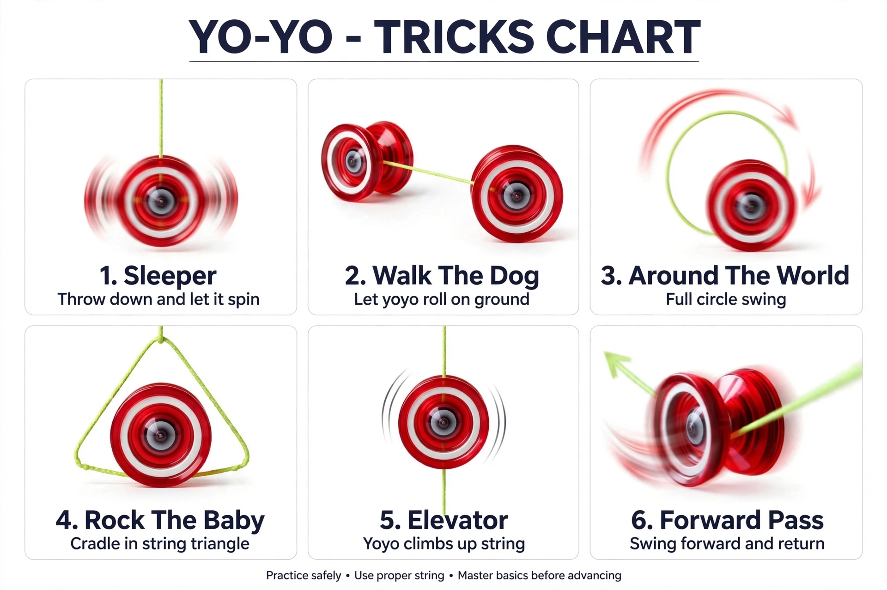

My Hobby Journey
I am passionate about technology, electronics, engineering, coding and creative inventions. This is where I document my projects, experiments and learning journey.
Arduino
Electronics, sensors and microcontrollers.
RC Engineering
Remote-controlled vehicles and machines.
Web Development
HTML, CSS and JavaScript websites.
Yo-Yo
Tricks, equipment and skill development.
Coding
Python, HTML, CSS and Arduino programming.
RC Engineering - RC Cars
What is an RC Car?
An RC car is a remote-controlled car that you drive with a transmitter or your phone. The car has a receiver that listens to your commands and tells the motors and steering what to do. It is the best project to learn motors, batteries, steering, and Arduino coding.
My Bluetooth RC Car
This is the finished car — Arduino UNO, L298N motor driver, HC-05 Bluetooth module, battery pack and 4 wheels on a blue chassis.
Types of RC Cars
On-Road / Drift Car
Fast on smooth ground. Good for drifting and racing on tarmac.
Off-Road Buggy
For grass, dirt and rough ground. Strong suspension.
Monster Truck
Big wheels. Jumps over obstacles. Very powerful.
Crawler
Slow but climbs over rocks. Very strong torque.
Main Parts of an RC Car
- Chassis: The frame. Holds everything together. Can be plastic, metal or Lego.
- Motor: Makes wheels spin. Brushed = cheap for beginners. Brushless = fast and powerful.
- ESC / Motor Driver: Controls speed of motor. Like accelerator in a real car. In Arduino projects we use L298N.
- Servo Motor: Controls steering. Turns front wheels left and right.
- Battery: NiMH = safe and cheap. LiPo = powerful and light, needs careful charging.
- Transmitter + Receiver: Transmitter is remote in your hand. Receiver is inside car. In this project your phone is the transmitter via Bluetooth.
- Wheels + Suspension: Bigger wheels = better for off-road. Suspension helps over bumps.
How an RC Car Works
- You push throttle on remote / phone
- Transmitter sends radio / Bluetooth signal
- Receiver in car gets the signal
- Motor driver tells motor how fast to spin
- Servo turns the steering
Blueprint - RC Car Design
Top view and side view. This shows where every part goes on the chassis. Chassis size: 150mm x 100mm. Wheel diameter: 50mm.
- Arduino UNO in the middle
- L298N motor driver next to Arduino
- HC-05 Bluetooth module at the front
- Battery pack at the rear
- DC motors on left and right
PROJECT: Build Your Own Bluetooth Arduino RC Car
Electronics needed:
- Arduino UNO
- L298N motor driver module
- 2x DC motors + wheels + chassis (or 4x motors)
- HC-05 Bluetooth module
- 9V battery / 2x Li-ion batteries + battery holder
- Breadboard and jumper wires
- Phone with Bluetooth RC Controller app
Circuit Diagram
Wire Colours: Red = Power, Black = Ground, Yellow = Signal (TX/RX/ENA), Blue = Signal (IN1-IN4), Green = Signal (ENB)
Circuit Connections:
- L298N IN1 to Arduino Pin 2
- L298N IN2 to Arduino Pin 3
- L298N IN3 to Arduino Pin 4
- L298N IN4 to Arduino Pin 5
- L298N ENA to Arduino Pin 9 (speed left)
- L298N ENB to Arduino Pin 10 (speed right)
- L298N 12V to Battery +
- L298N GND to Battery - AND Arduino GND
- L298N OUT1, OUT2 to Left Motor
- L298N OUT3, OUT4 to Right Motor
- HC-05 VCC to 5V
- HC-05 GND to GND
- HC-05 TX to Arduino Pin 0 (RX)
- HC-05 RX to Arduino Pin 1 (TX)
Tip: Disconnect HC-05 TX/RX wires when uploading code, then reconnect them.
Code:
// BEN LOGIC Bluetooth RC Car
// Use App: Bluetooth RC Controller
// F = Forward, B = Backward, L = Left, R = Right, S = Stop
char command;
int IN1 = 2;
int IN2 = 3;
int IN3 = 4;
int IN4 = 5;
int ENA = 9;
int ENB = 10;
void setup() {
Serial.begin(9600);
pinMode(IN1, OUTPUT);
pinMode(IN2, OUTPUT);
pinMode(IN3, OUTPUT);
pinMode(IN4, OUTPUT);
pinMode(ENA, OUTPUT);
pinMode(ENB, OUTPUT);
stopCar();
}
void loop() {
if (Serial.available() > 0) {
command = Serial.read();
}
if (command == 'F') {
forward();
} else if (command == 'B') {
backward();
} else if (command == 'L') {
turnLeft();
} else if (command == 'R') {
turnRight();
} else if (command == 'S') {
stopCar();
}
}
void forward() {
digitalWrite(IN1, HIGH);
digitalWrite(IN2, LOW);
digitalWrite(IN3, HIGH);
digitalWrite(IN4, LOW);
analogWrite(ENA, 200);
analogWrite(ENB, 200);
}
void backward() {
digitalWrite(IN1, LOW);
digitalWrite(IN2, HIGH);
digitalWrite(IN3, LOW);
digitalWrite(IN4, HIGH);
analogWrite(ENA, 200);
analogWrite(ENB, 200);
}
void turnLeft() {
digitalWrite(IN1, LOW);
digitalWrite(IN2, HIGH);
digitalWrite(IN3, HIGH);
digitalWrite(IN4, LOW);
analogWrite(ENA, 180);
analogWrite(ENB, 180);
}
void turnRight() {
digitalWrite(IN1, HIGH);
digitalWrite(IN2, LOW);
digitalWrite(IN3, LOW);
digitalWrite(IN4, HIGH);
analogWrite(ENA, 180);
analogWrite(ENB, 180);
}
void stopCar() {
digitalWrite(IN1, LOW);
digitalWrite(IN2, LOW);
digitalWrite(IN3, LOW);
digitalWrite(IN4, LOW);
analogWrite(ENA, 0);
analogWrite(ENB, 0);
}How to drive it: Pair phone to HC-05 (password 1234 or 0000), open Bluetooth RC Controller app, connect, then use arrow buttons to drive.
RC Car Upgrades
- Faster: Use stronger battery and brushless motor
- Stronger: Use metal gears and bigger wheels
- Smarter: Add ultrasonic sensor for obstacle avoidance
- Longer range: Use NRF24L01 radio module instead of Bluetooth
My RC Car Project


Arduino Laboratory
What is Arduino?
Arduino is an open-source electronics platform used to create interactive projects, robots, automation systems and inventions.
Arduino UNO R3

The UNO R3 is a microcontroller board powered by the ATmega328P.
- 14 digital input/output pins
- 6 analog input pins
- 6 PWM pins
- USB connection
- Reset button
- 5V and 3.3V power pins
- 16 MHz clock
Arduino UNO Main Parts
Microcontroller
The main chip that processes instructions.
Digital Pins
Used to read or send HIGH and LOW signals.
Analog Pins
Read analog voltage signals from sensors.
USB Port
Connects Arduino to a computer or compatible phone.
Power Jack
Accepts suitable external power.
Reset Button
Restarts the Arduino program.
Arduino Sensors Library
Ultrasonic Sensor
Measures distance using sound waves.
LDR Sensor
Detects the intensity of light.
DHT11 Sensor
Measures temperature and humidity.
PIR Sensor
Detects movement using infrared changes.
IR Sensor
Detects objects using infrared light.
Soil Moisture Sensor
Measures moisture in soil.
Joystick Module
Detects movement in two directions.
Sound Sensor
Detects sound intensity.
Flame Sensor
Detects infrared radiation associated with flames.
Gas Sensor
Detects certain gases in the environment.
ArduinoDroid Application
ArduinoDroid is an Android application for writing, compiling and uploading Arduino programs.
- Write Arduino code.
- Compile programs.
- Upload code to compatible boards.
- Practice programming using your phone.
Direct uploading requires compatible USB OTG hardware, board support and permissions.
First Arduino Program: Blink LED
void setup() {
pinMode(13, OUTPUT);
}
void loop() {
digitalWrite(13, HIGH);
delay(1000);
digitalWrite(13, LOW);
delay(1000);
}This program switches the built-in LED on and off every second.
Arduino Projects
Project 1: Fade - LED Brightness Control
Electronics needed:
- Arduino UNO
- 1x LED
- 1x 220 ohm resistor
- Breadboard and jumper wires
Circuit Diagram:
- LED long leg (positive) to Pin 9 through 220 ohm resistor
- LED short leg (negative) to GND
Code:
int ledPin = 9;
void setup() {
pinMode(ledPin, OUTPUT);
}
void loop() {
for (int b = 0; b <= 255; b++) {
analogWrite(ledPin, b);
delay(10);
}
for (int b = 255; b >= 0; b--) {
analogWrite(ledPin, b);
delay(10);
}
}The LED slowly gets brighter, then slowly fades out using PWM.
Project 2: Servo Motor Control
Electronics needed:
- Arduino UNO
- 1x SG90 servo motor
- Jumper wires
Circuit Diagram:
- Servo Brown / Black wire to GND
- Servo Red wire to 5V
- Servo Orange / Yellow wire to Pin 9
Code:
#include <Servo.h>
Servo myServo;
void setup() {
myServo.attach(9);
}
void loop() {
myServo.write(0);
delay(1000);
myServo.write(90);
delay(1000);
myServo.write(180);
delay(1000);
myServo.write(90);
delay(1000);
}The servo moves from 0 to 90 to 180 degrees and back.
Project 3: Liquid Crystal Display - LCD 16x2
Electronics needed:
- Arduino UNO
- 1x LCD 16x2 with I2C module
- Jumper wires
Circuit Diagram:
- LCD VCC to 5V
- LCD GND to GND
- LCD SDA to A4
- LCD SCL to A5
Code:
#include <Wire.h>
#include <LiquidCrystal_I2C.h>
LiquidCrystal_I2C lcd(0x27, 16, 2);
void setup() {
lcd.init();
lcd.backlight();
lcd.setCursor(0, 0);
lcd.print("BEN LOGIC");
lcd.setCursor(0, 1);
lcd.print("Arduino Lab");
}
void loop() {
}If the LCD is blank, change 0x27 to 0x3F in the code.
Project 4: Light Activated Alarm
Electronics needed:
- Arduino UNO
- 1x LDR
- 1x 10k ohm resistor
- 1x Buzzer
- 1x LED
- 1x 220 ohm resistor
Circuit Diagram:
- LDR one leg to 5V, other leg to A0 and to GND through 10k resistor
- Buzzer positive to Pin 8, negative to GND
- LED positive to Pin 13 through 220 ohm resistor, negative to GND
Code:
int ldrPin = A0;
int buzzerPin = 8;
int ledPin = 13;
void setup() {
pinMode(buzzerPin, OUTPUT);
pinMode(ledPin, OUTPUT);
Serial.begin(9600);
}
void loop() {
int lightValue = analogRead(ldrPin);
Serial.println(lightValue);
if (lightValue < 300) {
digitalWrite(ledPin, HIGH);
tone(buzzerPin, 1000);
} else {
digitalWrite(ledPin, LOW);
noTone(buzzerPin);
}
delay(200);
}Dark = alarm ON. Bright = alarm OFF.
Project 5: 4 LEDs in Sequence - Chaser
Electronics needed:
- Arduino UNO
- 4x LEDs
- 4x 220 ohm resistors
- Breadboard and jumper wires
Circuit Diagram:
- LED 1 to Pin 2
- LED 2 to Pin 3
- LED 3 to Pin 4
- LED 4 to Pin 5
- Each LED through a 220 ohm resistor to GND
Code:
int leds[] = {2, 3, 4, 5};
void setup() {
for (int i = 0; i < 4; i++) {
pinMode(leds[i], OUTPUT);
}
}
void loop() {
for (int i = 0; i < 4; i++) {
digitalWrite(leds[i], HIGH);
delay(200);
digitalWrite(leds[i], LOW);
}
for (int i = 3; i >= 0; i--) {
digitalWrite(leds[i], HIGH);
delay(200);
digitalWrite(leds[i], LOW);
}
}The LEDs chase forward and then backward like a running light.
Project 6: Traffic Lights
Electronics needed:
- Arduino UNO
- 1x Red LED, 1x Yellow LED, 1x Green LED
- 3x 220 ohm resistors
- Breadboard and jumper wires
Circuit Diagram:
- Red LED to Pin 8
- Yellow LED to Pin 9
- Green LED to Pin 10
- Each LED through 220 ohm resistor to GND
Code:
int redPin = 8;
int yellowPin = 9;
int greenPin = 10;
void setup() {
pinMode(redPin, OUTPUT);
pinMode(yellowPin, OUTPUT);
pinMode(greenPin, OUTPUT);
}
void loop() {
digitalWrite(greenPin, HIGH);
delay(5000);
digitalWrite(greenPin, LOW);
digitalWrite(yellowPin, HIGH);
delay(2000);
digitalWrite(yellowPin, LOW);
digitalWrite(redPin, HIGH);
delay(5000);
digitalWrite(redPin, LOW);
}Green = GO for 5 seconds, Yellow = GET READY for 2 seconds, Red = STOP for 5 seconds.
My Arduino Charts
Arduino UNO - Board Diagram

Arduino UNO - Electronics & Sensors

Web Development - How Websites Are Made
What is Web Development?
Web Development is building websites like this one — BEN LOGIC. Every website you see on your phone is made from 3 main languages working together: HTML, CSS, and JavaScript.
Think of it like building a house:
- HTML = The Structure / Bricks — Walls, doors, rooms
- CSS = The Paint / Design — Colours, size, beauty
- JavaScript = The Electricity / Brain — Lights, buttons, actions
1. HTML - HyperText Markup Language
What it does: HTML creates the content and structure. Text, headings, images, buttons, links, videos.
Without HTML, a website would be blank.
Example:
<h1>Hello World</h1>
<p>This is my first website</p>
<button>Click Me</button>
<img src="my-photo.jpg">Important HTML tags:
<h1> to <h6>= Headings, big to small<p>= Paragraph, normal text<img>= Image<a>= Link to another page<button>= Clickable button<div>= Box to hold things together<section>= A part of the page, like Arduino section
This BEN LOGIC website is mostly HTML. Every section you see — RC, Arduino, Yo-Yo — is an HTML section.
2. CSS - Cascading Style Sheets
What it does: CSS makes the website beautiful. Colours, fonts, sizes, spacing, dark mode / light mode, cards, shadows.
Without CSS, a website would look like plain black text on white paper. No colours, no boxes.
Example:
body {
background: #101827;
color: white;
}
h2 {
color: #00d5ff;
}
.card {
background: #1c293c;
padding: 22px;
border-radius: 12px;
}What this CSS means:
background= Background colourcolor= Text colourpadding= Space inside the boxborder-radius= Rounded corners
In this website, the blue cards, the dark background, and the blue headings are all CSS.
3. JavaScript - The Brain
What it does: JavaScript makes the website do things. When you click a button and something happens, that is JavaScript.
Without JavaScript, a website is just a poster. It looks nice but does nothing.
Example:
function sayHello() {
alert("Hello! Welcome to BEN LOGIC");
}JavaScript in this website:
- Switch Theme button = JavaScript changes dark mode to light mode
- MENU button on phone = JavaScript opens and closes the menu
- Journal = JavaScript saves what you type
- Search / Filter = JavaScript shows and hides things
How They Work Together
<!-- HTML: The Button -->
<button onclick="sayHello()">Click Me</button>
<!-- CSS: The Style -->
button {
background: #00d5ff;
padding: 11px 16px;
border-radius: 7px;
}
<!-- JavaScript: The Action -->
function sayHello() {
alert("You clicked the button!");
}HTML makes the button → CSS makes it blue and round → JavaScript makes it talk when you click it.
My Web Development Journey
Level 1: HTML
I learned to create headings, paragraphs, images and sections.
Level 2: CSS
I learned to add colours, cards, and make it look good on phone and computer.
Level 3: JavaScript
I learned to add theme switch, menu, and interactive journal.
Level 4: Projects
Now I build full websites like BEN LOGIC and add my Arduino + RC projects to them.
YO-YO KNOWLEDGE & LEARNING
Explore the science, engineering, brands, components, strings, techniques and skills behind the fascinating world of yo-yos.
Learn from beginner knowledge to advanced yo-yo performance and freestyle.
01. Introduction to Yo-Yos
A yo-yo is a toy and skill instrument consisting of two connected discs with an axle in the middle and a string attached around the axle.
When thrown downwards, the string unwinds and causes the yo-yo to spin. The player controls the movement using the string and performs different tricks.
Throw
Sending the yo-yo downwards using controlled movement.
Sleep
When the yo-yo spins at the end of the string.
Bind
A technique used to return an unresponsive yo-yo.
Mount
A position where the yo-yo rests on sections of string.
02. Popular Yo-Yo Brands
Different manufacturers produce yo-yos with different designs, materials, bearings and performance features.
MagicYoyo
Known for affordable plastic and metal yo-yos.
Popular models: K2 Crystal, N12 and Y01 Node.
Official WebsiteDuncan
A historic manufacturer of traditional and modern yo-yos.
Popular model: Butterfly XT.
Official WebsiteOffset YoYo
Modern designs for freestyle and string tricks.
Popular model: Cheatcode.
C3yoyodesign
Known for competitive yo-yo performance designs.
One Drop
Produces precision-oriented metal yo-yos.
Turning Point
Japanese manufacturer known for high-performance yo-yos.
iYoYo
Produces modern performance yo-yos.
03. Parts of a Yo-Yo
Understanding the construction of a yo-yo helps explain how it spins, sleeps, responds and performs tricks.
1. Body
The two outer halves of the yo-yo. Provides structure, mass and stability.
2. Axle
The central shaft connecting the two halves and supporting the spinning assembly.
3. Bearing
Reduces friction and allows the yo-yo to spin freely.
4. Response Pads
Rubber or silicone rings that help the string engage with the yo-yo.
5. Hub
The central region that houses and supports central components.
6. String
Connects the yo-yo to the player's finger and controls trick movements.
7. Spacers
Components found in some designs to control spacing and construction.
8. Side Effects
Removable components used in certain designs to change weight distribution and appearance.
04. Yo-Yo Strings
Strings are essential for controlling the yo-yo. Their materials, thickness and construction affect performance and feel.
Polyester
Common, affordable and suitable for everyday practice.
Cotton
Traditional material used in older and some looping yo-yos.
Nylon
Offers a different feel and can provide good durability.
Blended Strings
Combine fibres to balance different performance properties.
Parts of a String
- Finger loop – attaches the string to your finger.
- Slip knot – secures the finger loop.
- String body – the main working length.
- Tail – the end of the string.
05. Yo-Yo Shapes
Butterfly
Wide catch zone, commonly used for string tricks.
Imperial
Narrow gap design traditionally associated with looping.
H-Shape
Broad profile used in modern performance designs.
Organic
Rounded shape with a traditional feel.
V-Shape
Angular design often used in string-trick yo-yos.
W-Shape
Multiple contours for different design characteristics.
06. Levels of Yo-Yo Skills
Beginner
- Basic throw
- Gravity pull
- Sleeper
- Forward pass
- Walk the dog
Elementary
- Rock the baby
- Around the world
- Elevator
- Brain twister
- Trapeze
Intermediate
- Double or Nothing
- Split Bottom Mount
- Mach 5
- Cold Fusion
- Barrel Rolls
Advanced
- Slack tricks
- Whips
- Horizontal tricks
- Regenerations
- Complex combinations
Professional
- Freestyle routines
- Technical combinations
- Advanced horizontal tricks
- Original tricks
- Competition performance
These are suggested learning stages, not official international grades.
07. Responsive vs Unresponsive Yo-Yos
Responsive Yo-Yo
- Returns when the string is tugged.
- Usually easier to learn.
- Suitable for basic tricks.
- Often uses a narrower bearing gap.
Unresponsive Yo-Yo
- Does not normally return with a simple tug.
- Requires a bind.
- Suitable for advanced string tricks.
- Often uses a wider bearing gap.
Understanding a Bind
A bind is a technique where a section of string is fed into the yo-yo gap, engaging the response system and making the yo-yo return to the hand.
08. Five Competitive Yo-Yo Divisions
1A – Single Yo-Yo
One unresponsive yo-yo used for string tricks.
2A – Two Yo-Yos
Two responsive yo-yos used for looping tricks.
3A – Two String Yo-Yos
Two unresponsive yo-yos used for complex string tricks.
4A – Offstring
The yo-yo is not attached to the string and is thrown and caught.
5A – Counterweight
A counterweight replaces the finger attachment on the string.
09. Yo-Yo Materials
| Material | Characteristics |
|---|---|
| Plastic | Affordable and lightweight. |
| Aluminium | Lightweight, strong and popular for performance. |
| Stainless Steel | Dense and relatively heavy. |
| Titanium | Premium, strong and expensive. |
| Bi-metal | Combines two metals for weight distribution. |
10. Yo-Yo Maintenance and Care
Bearing Care
- Keep bearings clean.
- Remove dirt and dust.
- Use suitable lubricant when required.
- Avoid excessive lubrication.
String Care
- Replace worn strings.
- Avoid wet or dirty strings.
- Store spare strings properly.
Body Care
- Keep the yo-yo clean.
- Avoid hard impacts.
- Check for cracks.
- Inspect response pads.
11. Yo-Yo Performance Terms
| Term | Meaning |
|---|---|
| Spin time | How long a yo-yo spins. |
| Stability | Ability to maintain its spinning direction. |
| Weight distribution | How weight is arranged in the yo-yo. |
| Catch zone | Area where the string lands. |
| Gap width | Distance between the two halves. |
| Rim weight | Weight concentrated near the outer edges. |
| Vibration | Shaking during spinning. |
| Grind | A trick where the yo-yo slides on a surface. |
| Response system | Mechanism controlling return. |
| Bind | Technique for returning an unresponsive yo-yo. |
12. Test Your Yo-Yo Knowledge
Answer the following questions to test what you have learned.
13. Conclusion
Yo-yoing combines creativity, physics, engineering, coordination and skill. Understanding the parts, materials, strings and performance characteristics helps players become better and more knowledgeable.
My Yo-Yo Charts
Yo-Yo - Parts Diagram

Finger Loop, String, Rim, Hub, Gap, Halves, Response Pads, Ball Bearing, Axle.
Yo-Yo - Tricks Chart

Sleeper, Walk The Dog, Around The World, Rock The Baby, Elevator, Forward Pass.
Coding
What is Coding?
Coding is giving instructions to a computer. You write the instructions in a language the computer understands.
Python
Easy to learn. Good for games, apps, and AI.
print("Hello BEN LOGIC")HTML + CSS
For building websites.
<h1>My Website</h1>JavaScript
For making websites interactive.
alert("Hello!")Arduino C++
For controlling electronics, motors and sensors.
digitalWrite(13, HIGH);These are suggested learning stages, not official universal rankings.
Python Coding
Learn Python programming from the basics to advanced concepts. Explore coding, electronics, robotics, software development and practical projects.
Learning Contents
1. Introduction to Python
Python is a high-level, general-purpose programming language used to give instructions to computers. It was created by Guido van Rossum and first released in 1991.
Applications of Python
- Artificial Intelligence (AI).
- Website development.
- Robotics and electronics.
- Game development.
- Data analysis.
- Automation.
- Software development.
Advantages of Python
- Easy to read and understand.
- Simple syntax.
- Has many useful libraries.
- Works on different operating systems.
- Useful for many applications.
2. Python Fundamentals
Important concepts
| Concept | Meaning |
|---|---|
| Syntax | Rules for writing code. |
| Variable | Stores information. |
| Data type | Defines the kind of data. |
| Function | Reusable block of code. |
| Loop | Repeats instructions. |
| Condition | Makes decisions. |
| Comment | Explains code. |
Basic Python commands
print("Hello World")
name = input("Enter your name: ")
print("Welcome", name)Variables
A variable is a named storage location for information.
name = "Ben"
age = 20
country = "Kenya"
print(name)
print(age)
print(country)Data types
| Type | Meaning | Example |
|---|---|---|
| int | Whole number | 25 |
| float | Decimal number | 3.14 |
| str | Text | "Python" |
| bool | True or False | True |
| list | Collection | [1,2,3] |
| tuple | Fixed collection | (1,2,3) |
| dict | Key-value pairs | {"name":"Ben"} |
| set | Unique items | {1,2,3} |
Input and output
name = input("Enter your name: ")
print("Hello", name)Type conversion
age = "20"
age = int(age)
print(age)3. Python Operators
Operators perform calculations, comparisons and assignments.
| Operator | Meaning |
|---|---|
| + | Addition |
| - | Subtraction |
| * | Multiplication |
| / | Division |
| // | Floor division |
| % | Remainder |
| ** | Power |
| == | Equal to |
| != | Not equal to |
| > and < | Greater and less than |
| and, or, not | Logical operators |
number1 = 10
number2 = 5
print(number1 + number2)
print(number1 * number2)
print(number1 > number2)4. Decision Making
Decision-making allows a program to execute different instructions depending on whether conditions are true or false.
- if: Checks a condition.
- elif: Checks another condition.
- else: Runs when previous conditions are false.
age = 20
if age >= 18:
print("Adult")
else:
print("Underage")5. Python Loops
Loops repeat instructions automatically.
For loop
for number in range(1, 6):
print(number)While loop
number = 1
while number <= 5:
print(number)
number += 1Other loop controls
- break: Stops a loop.
- continue: Skips an iteration.
6. Data Structures
| Structure | Purpose |
|---|---|
| List | Stores multiple changeable items. |
| Tuple | Stores unchangeable items. |
| Dictionary | Stores key-value pairs. |
| Set | Stores unique items. |
List example
hobbies = ["Arduino", "RC", "YoYo"]
hobbies.append("Coding")
print(hobbies)Dictionary example
student = {
"name": "Ben",
"age": 20,
"country": "Kenya"
}
print(student["name"])7. Functions
A function is a reusable block of code designed to perform a specific task.
def add(a, b):
return a + b
answer = add(10, 20)
print(answer)- def: Creates a function.
- Parameter: Receives information.
- Argument: Actual value passed to a function.
- return: Sends a result back.
8. Error Handling and File Handling
Common Python errors
- SyntaxError – Incorrect code structure.
- NameError – Undefined variable.
- TypeError – Incorrect operation between types.
- ValueError – Invalid value.
- IndexError – Invalid collection position.
- ZeroDivisionError – Division by zero.
Error handling
try:
number = int(input("Enter number: "))
print(number)
except ValueError:
print("Enter a valid number")File handling
Python can create, read and update files.
with open("notes.txt", "w") as file:
file.write("Learning Python")
with open("notes.txt", "r") as file:
print(file.read())File modes: r = read, w = write, a = append, x = create.
9. Object-Oriented Programming
OOP is a programming approach that organises software using classes and objects.
class Robot:
def __init__(self, name):
self.name = name
robot1 = Robot("Arduino Robot")
print(robot1.name)Four main principles
- Encapsulation – Keeping related data and methods together.
- Inheritance – Reusing features from another class.
- Polymorphism – Same interface, different behaviours.
- Abstraction – Hiding unnecessary implementation details.
10. Python Libraries and Modules
Libraries provide ready-made tools that make programming easier.
| Library | Application |
|---|---|
| NumPy | Mathematical calculations |
| Pandas | Data analysis |
| Matplotlib | Charts and graphs |
| Pygame | Game development |
| OpenCV | Image processing |
| Django | Web development |
| TensorFlow | Machine learning |
| PyTorch | Artificial intelligence |
Module example
import math
print(math.sqrt(25))11. Python and Electronics
Python can be used in robotics, electronics and hardware projects through supported boards and libraries.
- Raspberry Pi supports Python.
- Raspberry Pi Pico supports MicroPython.
- ESP32 supports MicroPython.
- Some Arduino boards support MicroPython.
- Arduino Uno can communicate with Python through USB serial.
Example: Arduino LED control
Arduino code:
void setup() {
Serial.begin(9600);
pinMode(13, OUTPUT);
}
void loop() {
if (Serial.available()) {
char command = Serial.read();
if (command == '1') {
digitalWrite(13, HIGH);
}
if (command == '0') {
digitalWrite(13, LOW);
}
}
}Python computer code:
import serial
import time
arduino = serial.Serial('COM3', 9600)
time.sleep(2)
arduino.write(b'1')
time.sleep(2)
arduino.write(b'0')
arduino.close()Replace COM3 with the actual serial port on your computer.
12. Practical Python Projects
01. Calculator
Practise variables, inputs and operators.
02. Guessing Game
Practise loops and conditions.
03. Digital Clock
Practise time and loops.
04. Student System
Practise lists and dictionaries.
05. Computer Game
Practise Pygame and OOP.
06. RC Robot
Combine Python and electronics.
13. Python Learning Roadmap
- Week 1: Introduction, syntax and variables.
- Week 2: Operators and decision-making.
- Week 3: Loops and data structures.
- Week 4: Functions and file handling.
- Week 5: Object-oriented programming.
- Week 6: Practical programming projects.
- After Week 6: Robotics, AI or web development.
14. Important Programming Vocabulary
| Word | Meaning |
|---|---|
| Coding | Writing computer instructions. |
| Algorithm | Steps used to solve a problem. |
| Debugging | Finding and correcting errors. |
| Interpreter | Executes Python instructions. |
| IDE | Software for writing and running code. |
| Framework | Tools and structure for building applications. |
| API | Allows software systems to communicate. |
15. Python Coding Examination
Test your understanding of Python with these 15 multiple-choice questions. Select one answer for each question, then submit to see your results.